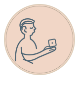
Individuel
Premier lancer, premier sourire
Effectuer un premier tirage de catégorie.
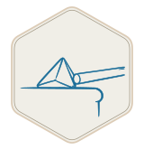
Individuel
Dés en confiance
Effectuer 5 tirages de catégorie.
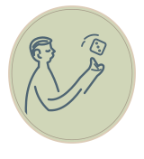
Individuel
Poignet bien échauffé
Effectuer 15 tirages de catégorie.
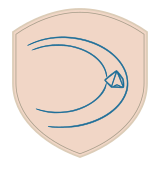
Individuel
Ça roule pour moi
Effectuer 30 tirages de catégorie.
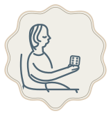
Individuel
Le hasard a mon numéro
Effectuer 75 tirages de catégorie.
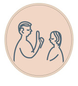
Individuel
J’ai une idée !
Partager une première proposition.
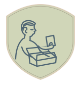
Individuel
La boîte à bonnes idées
Partager 5 propositions.
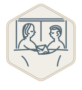
Individuel
Service des propositions
Partager 15 propositions.
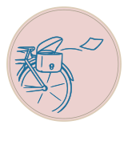
Individuel
Le moteur à idées
Partager 30 propositions.
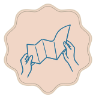
Individuel
Jamais à court d’élan
Partager 75 propositions.
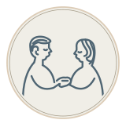
Individuel
Au rendez-vous du duo
Participer à un premier défi validé par vos deux coches.
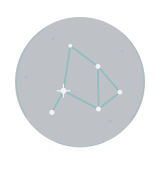
Individuel
Cinq étoiles de présence
Participer à 5 défis validés à deux.
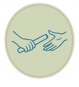
Individuel
Partenaire de compétition
Participer à 15 défis validés à deux.
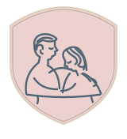
Individuel
Un pilier très joueur
Participer à 30 défis validés à deux.
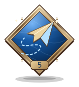
Individuel
Bonne idée, bon moment
Voir 5 de vos propres propositions aboutir à une validation à deux.
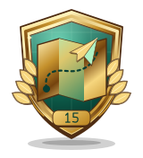
Individuel
Mes idées font leur chemin
Voir 15 de vos propres propositions aboutir à une validation à deux.
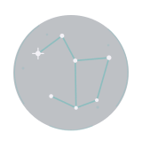
Individuel
Je relève le gant
Valider à deux 5 propositions qui vous ont été adressées.
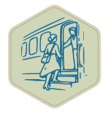
Individuel
Partenaire partant
Valider à deux 15 propositions qui vous ont été adressées.
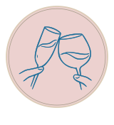
Individuel
Complice en formation
Participer à 3 défis Complicité validés à deux.
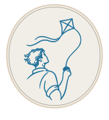
Individuel
Complice de haut vol
Participer à 10 défis Complicité validés à deux.
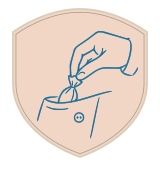
Individuel
Plaisirs en poche
Participer à 3 défis Plaisirs validés à deux.
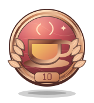
Individuel
Le goût des petites attentions
Participer à 10 défis Plaisirs validés à deux.
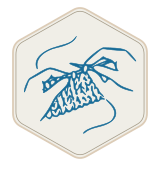
Individuel
Les mains dans le projet
Participer à 3 défis Projets validés à deux.
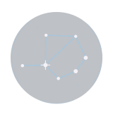
Individuel
Permis de bricoler à deux
Participer à 10 défis Projets validés à deux.
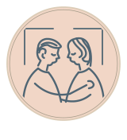
Individuel
Club privé
Participer à 3 défis Intimité validés à deux.
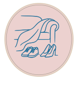
Individuel
Complice à huis clos
Participer à 10 défis Intimité validés à deux.
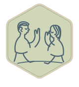
Individuel
On se recroise
Commencer un tirage, proposer ou cocher un défi, sur 3 jours différents.
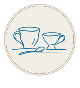
Individuel
Petite habitude, grand sourire
Commencer un tirage, proposer ou cocher un défi, sur 10 jours différents.
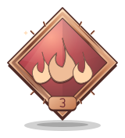
Individuel
Trois jours, trois clins d’œil
Commencer un tirage, proposer ou cocher un défi, trois jours de suite.
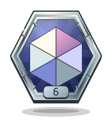
Individuel
Six nuances de moi
Participer à 6 variantes différentes, chacune validée à deux.
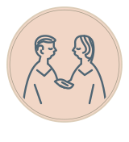
À deux
Premier nous
Valider ensemble un premier défi.
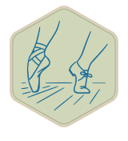
À deux
Duo en rodage
Valider ensemble 5 défis.
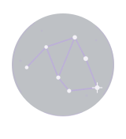
À deux
La fabrique à souvenirs
Valider ensemble 10 défis.
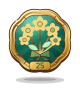
À deux
Vingt-cinq bonnes raisons
Valider ensemble 25 défis.
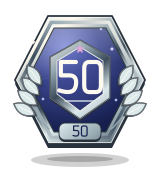
À deux
Duo demi-centenaire
Valider ensemble 50 défis.
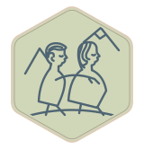
À deux
La centaine complice
Valider ensemble 100 défis.
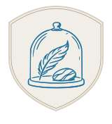
À deux
Collectionneurs de moments
Valider ensemble 250 défis.
À deux
Le duo des grands jours
Valider ensemble 500 défis.
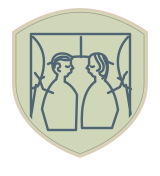
À deux
On change de décor
Valider ensemble au moins un défi dans 2 catégories différentes.
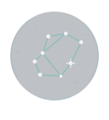
À deux
Tour complet du duo
Valider ensemble au moins un défi dans chacune des 4 catégories.
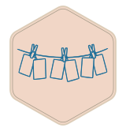
À deux
Six façons de se retrouver
Valider ensemble 6 cartes différentes.
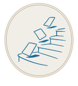
À deux
Douze cartes, zéro routine
Valider ensemble 12 cartes différentes.
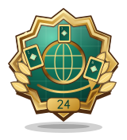
À deux
Le grand tour des cartes
Valider ensemble 24 cartes différentes.
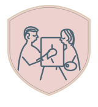
À deux
Douze nuances de nous
Valider ensemble 12 variantes différentes.
À deux
La routine fait sa valise
Valider ensemble 36 variantes différentes.
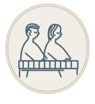
À deux
L’art de varier les plaisirs
Valider ensemble 72 variantes différentes.
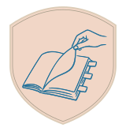
À deux
On remet ça
Terminer au moins un défi ensemble lors de 3 dates différentes.
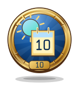
À deux
Le rendez-vous des bons jours
Terminer au moins un défi ensemble lors de 10 dates différentes.
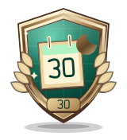
À deux
Trente jours qui comptent
Terminer au moins un défi ensemble lors de 30 dates différentes.
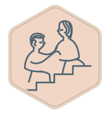
À deux
Trois à la suite
Terminer au moins un défi ensemble pendant 3 jours consécutifs.
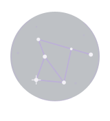
À deux
Une semaine en tandem
Terminer au moins un défi ensemble pendant 7 jours consécutifs.
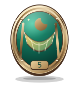
À deux
Le week-end nous va bien
Valider ensemble 5 défis un samedi ou un dimanche.
À deux
Duo du dimanche aussi
Valider ensemble 20 défis un samedi ou un dimanche.
À deux
Les quatre roues du duo
Valider ensemble au moins 5 défis dans chacune des 4 catégories.
À deux
faiseuse de sartorius saillant
Réaliser 3 massages des cuisses, chacun validé par vos deux coches.
À deux
Visage parfaitement recouvert
3 faciales, validées par vos deux coches.
À deux
Post-it, grand effet
Valider ensemble 3 petits mots doux cachés.
À deux
La brigade des crêpes
Valider ensemble 3 réalisations de la variante Crêpes.
À deux
Le duo prend racine
Valider ensemble 3 balades en forêt.
À deux
Le tiroir gagne, nous aussi
Valider ensemble 3 parenthèses d’une heure avec le téléphone dans un tiroir.
À deux
Langue vivante, contrôle continu
Valider ensemble 3 fois « Un baiser · Avec la langue », avec vos deux coches.
À deux
Le cou de génie
Valider ensemble 3 fois « Un baiser · Dans le cou », avec vos deux coches.
À deux
Bonus de covoiturage
Valider ensemble 3 fois « Fellation · En voiture », avec vos deux coches.
À deux
La douche a pris du retard
Valider ensemble 3 fois « Fellation · Douche », avec vos deux coches.
À deux
Le dessous des dossiers
Valider ensemble 3 fois « Fellation · Sous le bureau », avec vos deux coches.
À deux
Siège social très personnel
Valider ensemble 3 fois « Cunnilingus · Sit-Face », avec vos deux coches.
À deux
Horticulture sous verrière
Valider ensemble 3 fois « Cunnilingus · Véranda », avec vos deux coches.
À deux
Andromaque fait demi-tour
Valider ensemble 3 fois « Pénétration · Andromaque inversée », avec vos deux coches.
À deux
Argenterie de compétition
Valider ensemble 3 fois « Pénétration · Cuillère », avec vos deux coches.
À deux
Direction artistique libre
Valider ensemble 3 fois « Pénétration · Position au choix », avec vos deux coches.
À deux
Le quart d’heure qui vibre
Valider ensemble 3 fois « Lovense · 15 minutes dedans », avec vos deux coches.
À deux
Batterie incluse, soirée comprise
Valider ensemble 3 fois « Lovense · Une soirée », avec vos deux coches.
À deux
Gris, mais pas sages
Valider ensemble 3 fois « Photoshoot original · Noir et blanc », avec vos deux coches.
À deux
Ombres portées, intentions assumées
Valider ensemble 3 fois « Photoshoot original · Ombres », avec vos deux coches.
À deux
Objectif : buée
Valider ensemble 3 fois « Photoshoot original · Sous la douche », avec vos deux coches.
À deux
Bulletin d’averses dorées
Valider ensemble 3 fois « Golden Shower », avec vos deux coches.
À deux
La Chapelle Sextine
Valider ensemble 3 fois « Faciale à l'église », avec vos deux coches.
À deux
Mode manuel, caméra active
Valider ensemble 3 fois « Webcam — masturbation », avec vos deux coches.
À deux
Finale en visioconférence
Valider ensemble 3 fois « Webcam — faciale », avec vos deux coches.
À deux
Haut débit, haut retiré
Valider ensemble 3 fois « Webcam — nudité du haut », avec vos deux coches.
À deux
Réunion sans pantalon
Valider ensemble 3 fois « Webcam — nudité du bas », avec vos deux coches.
À deux
Caméra de recul
Valider ensemble 3 fois « Webcam — fesses », avec vos deux coches.
À deux
L’entrée des artistes
Valider ensemble 3 fois « Pénétration anale », avec vos deux coches.
À deux
Double réservation confirmée
Valider ensemble 3 fois « Double pénétration », avec vos deux coches.
À deux
CDD d’une heure
Valider ensemble 3 fois « Une heure de soumission », avec vos deux coches.
À deux
Mention fessé-bien
Valider ensemble 3 fois « Session fessée », avec vos deux coches.
À deux
César du huis clos
Valider ensemble 3 fois « On tourne un porno privé ! », avec vos deux coches.
À deux
Studio sous tension
Valider ensemble 3 fois « Séance photo BDSM », avec vos deux coches.
À deux
Glissement de terrain
Valider ensemble 3 fois « Massage Nuru », avec vos deux coches.
À deux
Oscar du meilleur remake maison
Valider ensemble 3 fois « Reproduction d’un film porno », avec vos deux coches.
À deux
Fripes en orbite
Valider ensemble 3 fois « Vinted », avec vos deux coches.
À deux
Trouvailles en ville
Valider ensemble 3 fois « En Ville », avec vos deux coches.
À deux
Service au hublot
Valider ensemble 3 fois « Fast Food », avec vos deux coches.
À deux
Passeport gourmand
Valider ensemble 3 fois « Cuisine du monde », avec vos deux coches.
À deux
Miettes d’étoiles
Valider ensemble 3 fois « Douceur maison », avec vos deux coches.
À deux
Petits soins, grande classe
Valider ensemble 3 fois « Préparer un petit truc », avec vos deux coches.
À deux
Pépites de rayon
Valider ensemble 3 fois « Monoprix », avec vos deux coches.
À deux
Offrandes sous scellés
Valider ensemble 3 fois « Passage du Désir », avec vos deux coches.
À deux
Globe-trotters du canapé
Valider ensemble 2 fois « Petites quêtes à deux · GeoGuessr (voyage en ligne) », avec vos deux coches.
À deux
Chasseurs de mots
Valider ensemble 2 fois « Petites quêtes à deux · Déchiffrer un mot codé (Cémantix) », avec vos deux coches.
À deux
Trésors hors carte
Valider ensemble 2 fois « Petites quêtes à deux · Retrouver un objet caché (On tente un géocache ?) », avec vos deux coches.
À deux
Relieurs d’étoiles
Valider ensemble 2 fois « Lever les yeux ensemble · Repérer trois constellations », avec vos deux coches.
À deux
Sur la bonne orbite
Valider ensemble 2 fois « Lever les yeux ensemble · Suivre un satellite », avec vos deux coches.
À deux
Deux soirs dorés
Valider ensemble 2 fois « Lever les yeux ensemble · Voir le soleil se coucher », avec vos deux coches.
À deux
Le mot de la langue
Valider ensemble 3 fois « Oral · Cunni » tiré par Clément, avec vos deux coches.
À deux
Dernière goutte
Valider ensemble 3 fois « Oral · Avale » tiré par Agathe, avec vos deux coches.
À deux
Courant d’air complice
Valider ensemble 2 fois « Oral · Suce dehors (ou je veux) » tiré par Agathe, avec vos deux coches.
À deux
Accélération à deux
Valider ensemble 3 fois « Quickie », avec vos deux coches.
À deux
Côté Andromaque
Valider ensemble 3 fois « Quickie · Andromaque », avec vos deux coches.
À deux
Hors des murs
Valider ensemble 2 fois « Quickie · Dehors (ou je veux) », avec vos deux coches.
À deux
Synchronisation privée
Valider ensemble 2 fois « Lovense · 30 min avec AdultTime », avec vos deux coches.
À deux
Signal hors réseau
Valider ensemble 3 fois « Lovense · 30 min dehors », avec vos deux coches.
À deux
Direction artistique à deux
Valider ensemble 2 fois « Photoshoot original · À thème », avec vos deux coches.
À deux
Gros plan sur nous
Valider ensemble 2 fois « Photoshoot original · Portrait serré », avec vos deux coches.
À deux
Sous les pixels
Valider ensemble 2 fois « Webcam · Webcam sous vêtements », avec vos deux coches.
À deux
Fréquence privée
Valider ensemble 3 fois « Webcam », avec vos deux coches.
À deux
Sur ton écran seulement
Valider ensemble 3 fois « Nudes · Une nude de Agathe SOFT pour moi », avec vos deux coches.
À deux
Nœud de confiance
Valider ensemble 3 fois « BDSM · Bondage », avec vos deux coches.
À deux
Coffret à sensations
Valider ensemble 2 fois « BDSM · Lots de jouets, attachée », avec vos deux coches.
À deux
Petit objet, grand effet
Valider ensemble 3 fois « Anal · Plug », avec vos deux coches.